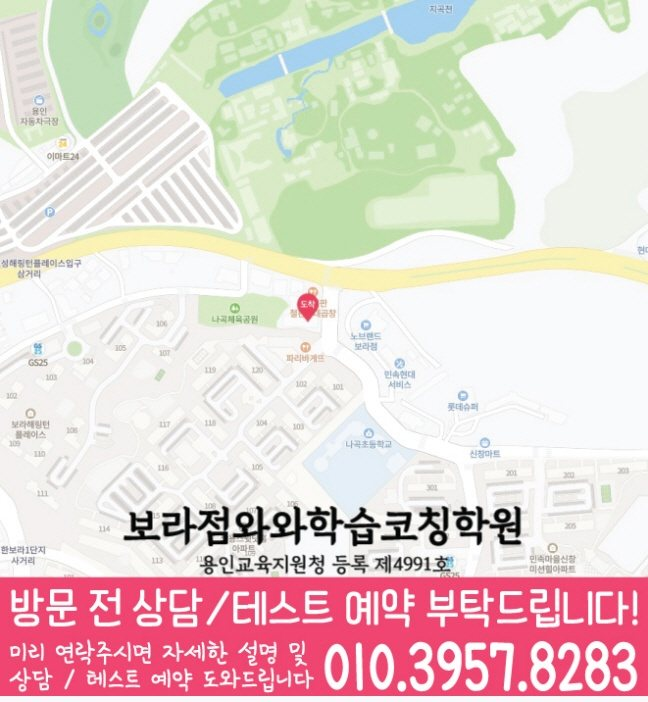

실제 방문 위치
보라점의 실제 방문 주소는 경기 용인시 기흥구 사은로126번길 6 신원프라자 303호입니다. 상담 예약과 건물 출입 방법은 방문 전에 확인하세요.
WAWA LEARNING COACHING CENTER · 경기 용인시
와와학습코칭센터 보라점 상담을 준비할 때는 현재 교재와 답을 고치기 전의 기록을 함께 정리하세요. 이 페이지에서는 학생이 막힌 부분을 나누어 질문하는 기준을 확인하고, 연결된 1개 동네에서 영어·수학·학년별 공부 방법을 선택할 수 있습니다. 실제 방문 주소와 과목별 개설 자료는 별도의 보라점 지점 안내에서 확인하세요.
수업 안내와 함께 현재 과제에 필요한 공부 방법을 읽어 보세요. 글에서 정리한 질문을 이 페이지의 지점 상담에 가져갈 수 있습니다.
학습 중점과 확인 과제를 읽고, 학생이 어려워하는 부분을 상담 질문으로 준비하세요. 아래 계획은 학습 참고 자료이며 실제 수강 가능 학년·과목은 지점에서 확인할 수 있습니다.
선생님의 지도 방향을 읽고, 학생이 원하는 도움을 상담 질문으로 준비해 보세요. 담당 과목·학년은 지점에서 확인할 수 있습니다.
CENTER AT A GLANCE
이 페이지는 보라동 학생의 상담 준비를 위해 센터 주소, 국어·영어·수학·과학 학년 정보, 학교 참고 자료를 서로 구분해 보여 줍니다. 각 항목은 확인 시점이 다를 수 있으므로 최종 운영 여부는 상담 때 다시 확인하세요.
LOCAL SOURCE GUIDE
보라점의 실제 방문 주소는 경기 용인시 기흥구 사은로126번길 6 신원프라자 303호입니다. 상담 예약과 건물 출입 방법은 방문 전에 확인하세요.
국어 중1~중3 / 영어 초1~고2 / 수학 초1~고2 / 과학 초1~고3. 별도 확인 학년과 과목별 조건은 아래 기재 자료를 함께 읽고, 희망 요일의 현재 모집 여부는 지점에 문의하세요.
센터 자료의 학교명과 동네별 타깃학교 자료는 서로 다른 참고 목록입니다. 학교명만으로 전용반·제휴·모집 대상이나 학생의 시험 범위를 판단하지 마세요.
SUBJECT & GRADE
중1 · 중2 · 중3
별도 확인 학년: 초1 · 초2 · 초3 · 초4 · 초5 · 초6 · 고1
초1~초6 · 고1 국어 수업은 현재 개설 여부를 먼저 확인해 주세요.
국어는 중등 내신 중심으로 안내합니다. 다른 학교급 수업은 별도 확인이 필요합니다.
초1 · 초2 · 초3 · 초4 · 초5 · 초6 · 중1 · 중2 · 중3 · 고1 · 고2
초1 · 초2 · 초3 · 초4 · 초5 · 초6 · 중1 · 중2 · 중3 · 고1 · 고2
초1 · 초2 · 초3 · 초4 · 초5 · 초6 · 중1 · 중2 · 중3 · 고1 · 고2 · 고3
기재 학년 확인 필요
자료 미기재를 개설 불가로 판단하지 마세요. 현재 개설 여부는 지점에 문의하세요.
제공된 센터 자료 기준입니다. 기재 학년은 현재 모집이나 시간표를 뜻하지 않습니다. 미기재 과목과 학생 진도에 맞는 수업은 지점에 확인하세요.
센터 교습비 안내 확인 →


LEARNING FLOW
국어·영어·수학·과학 답안에서 틀린 문제만 모으기보다 문제를 읽지 못한 경우와 개념을 모른 경우를 따로 표시해 가져가세요.
학생이 스스로 확인할 항목과 상담에서 점검받을 항목을 분리하면 계획표가 단순한 할 일 목록으로 끝나지 않습니다.
오답은 정답을 옮겨 적는 것으로 끝내지 않고 국어·영어·수학·과학별 원인을 표시한 뒤 일정 간격을 두고 다시 풉니다.
SCHOOL REFERENCE
센터 자료에 적힌 학교명을 학교급별로 표시했습니다. 동네별 타깃학교 목록과는 별도 자료이며 전용반·제휴·현재 모집을 뜻하지 않습니다. 기재 여부와 관계없이 실제 재학 학교와 시험 범위표를 준비하세요.
PARENT CONSULTATION SCENARIO
교재 진도는 나갔지만 혼자 풀 때 막힌다면 설명을 들은 문제와 스스로 해결한 문제를 구분해 기록하는 것이 좋습니다. 와와학습코칭센터 보라점 상담을 준비할 때 다음 기준을 함께 보세요. 이런 변화가 필요하다면 최근 답안에서 개념 부족과 실행 부족을 서로 다른 항목으로 표시해 가져가세요.
상담 준비 과정을 설명하기 위한 예시이며 개인의 이용 경험을 인증한 후기가 아닙니다. 학생마다 필요한 순서는 달라질 수 있습니다.
QUESTIONS & ANSWERS
교재명·진도·반복 오답·평소 학습 시간을 과목별로 나누고 가장 먼저 해결하고 싶은 문제를 한 가지씩 적어 오세요.
국어 자료상 안내 학년은 중1 · 중2 · 중3입니다. 초1 · 초2 · 초3 · 초4 · 초5 · 초6 · 고1은 별도 확인 학년입니다. 초1~초6 · 고1 국어 수업은 현재 개설 여부를 먼저 확인해 주세요. 국어는 중등 내신 중심으로 안내합니다. 다른 학교급 수업은 별도 확인이 필요합니다. 영어 자료상 안내 학년은 초1 · 초2 · 초3 · 초4 · 초5 · 초6 · 중1 · 중2 · 중3 · 고1 · 고2입니다. 수학 자료상 안내 학년은 초1 · 초2 · 초3 · 초4 · 초5 · 초6 · 중1 · 중2 · 중3 · 고1 · 고2입니다. 과학 자료상 안내 학년은 초1 · 초2 · 초3 · 초4 · 초5 · 초6 · 중1 · 중2 · 중3 · 고1 · 고2 · 고3입니다. 사회의 기재 학년은 확인이 필요합니다. 현재 모집·요일·시간표는 지점에 확인하세요.
학교 진도와 개인 복습을 다른 칸에 기록하고, 수행평가나 시험 일정이 바뀌면 우선순위부터 다시 조정하세요.
국어·영어·수학·과학 오답을 개념 부족·조건 누락·실수·시간 부족으로 나누고 수정한 날짜와 다시 푼 날짜를 따로 기록하세요.
센터 자료의 참고 학교는 나곡초, 나곡중, 보라중, 상갈중, 보라고, 신갈고입니다. 이 목록과 동네별 타깃학교 자료는 범위가 다릅니다. 학교명만으로 전용반·현재 모집·학생의 시험 범위를 확정하지 말고 재학 자료를 준비하세요.
상담 전 체크
보라동 학생의 미완료 항목과 이유를 지우지 말고 가져가면 실행 가능한 분량을 검토하기 좋습니다.